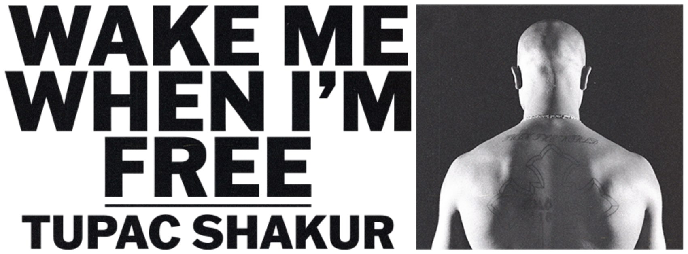
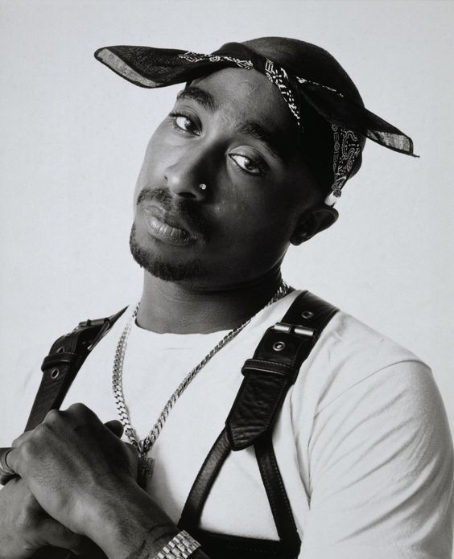

|  | |
|

I Gede Arya Winnata Suparta Tupac Amaru Shakur (16 Juni 1971 – 13 September 1996; terlahir dengan nama Parish Lesane Crooks) adalah seorang rapper, aktor, aktivis, dan penyair dari AS. Ia memiliki nama samaran 2Pac, Makaveli, dan 'Pac. Dalam Guinness Book of World Records ia dikenal sebagai rapper tersukses dunia, karena ia menjual lebih dari 73 juta album di dunia, termasuk 44,5 juta di AS. Kebanyakan lagu Shakur ditulis mengenai kekerasan di ghetto, rasisme, masalah sosial, dan kadang pertengkarannya dengan rapper lain. Ia dilahirkan di New York City namun pindah ke California pada 1988. Pada 1990, ia direkrut menjadi backup dancer untuk kelompok Digital Underground. Album pertamanya, 2Pacalypse Now, mendapat pujian dan kecaman karena liriknya yang kontroversial. Pada 1993 ia dituduh memperkosa seorang wanita dan diadili. Sehari sebelum keputusan dibacakan, ia ditembak 5 kali di Manhattan dan terluka berat. Shakur mencurigai beberapa orang dalam industri musik rap dan hal ini mengawali East Coast-West Coast feud. Setelah menjalani hukuman selama 11 bulan, Shakur dibebaskan dari penjara dengan denda yang dibayar oleh Marion "Suge" Knight, CEO dari Death Row Records. Sebagai imbalannya Shakur harus merilis 3 album dari label tersebut, dengan album kelimanya, All Eyez on Me, dihitung sebagai 2 album. Pada 7 September 1996, Shakur ditembak 4 kali dalam sebuah drive-by shooting di Las Vegas, Nevada. Pada 13 September 1996, enam hari sesudah ditembak, Shakur tewas karena kegagalan pernapasan dan gagal jantung di University Medical Center, Las Vegas. |
|
|
Dibuat oleh Diditts | |